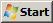
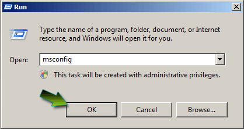
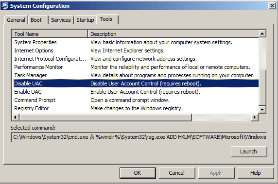
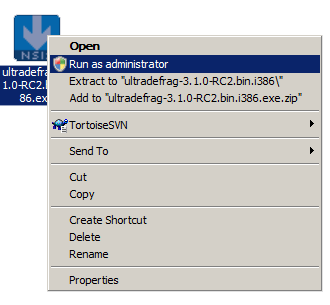
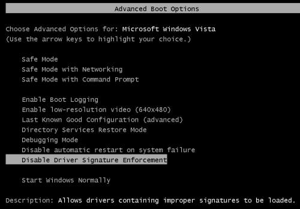
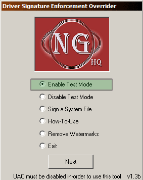
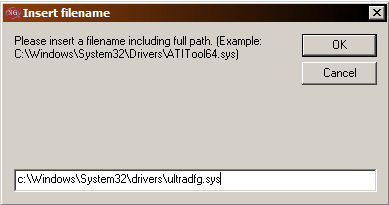
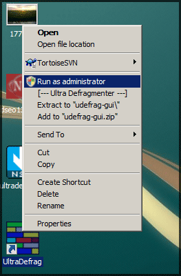
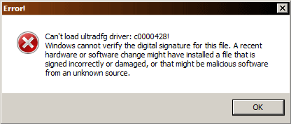

ULTRADEFRAG
An Open Source Defragmenter

ULTRA DEFRAG
- OVERVIEW
- SCREENSHOTS
- DOWNLOAD
- FORUM
- DISCLAIMER
- CREDITS AND LICENCE
- REPORT BUGS
- UD SOURCEFORGE
- VERSION HISTORY
DOCUMENTATION
QUICK LINKS
- LINKS
- ART GALLERY
- VISTA INSTALLATION FAQ
- ULTRADEFRAG WEB LOGOS
- PERSONAL PAGE OF DMITRI
- PERSONAL BLOG OF JUSTIN
The term UltraDefrag is a shorthand for the Ultra Defragmenter and holds no connection with potential owners of registered trademarks or other rights. All trademarks, brands, and names are the property of their respective owners.


UltraDefrag Installation Guide for Vista
Install ultradefrag on a Windows Vista Operating
Follow the following steps to install UltraDefrag on Vista
Step 1
Download the correct version of UltraDefrag. If you are using Windows XP or Vista 64bit then download the 64bit package.
If you are using any 32bit operating system then download the 32bit package of UltraDefrag.
Step 2 - Disable UAC (User Account Control) in Vista
There is no security risk or issue if you disable UAC. Infact UAC will give you the ability to use many other OpenSource software.
The UAC forces users that are part of the local administrators group to run like they were regular users with no administrative privileges. There are two ways to disable UAC.
- 1 - Via MSCONFIG.
Click on the Start menu and press the key " R ".
This will open the run window in VISTA. Type " MSCONFIG " And hit enter or Click OK.
This will open the System Configuration Window.
Go to the TOOLS tab and scroll down until you find DISABLE UAC.

Press the Launch Button. A series of Command Window will open and when done, you can close the window. Click OK and Close MSCONFIG. Now all you need to do is restart your computer and UAC will be disabled.
( If you need to enable UAC for some reason, then follow the same steps use LAUNCH on the ENABLE UAC Line. )
For many other methods of Disbling UAC follow this < link >
Step 3 - Install UltraDefrag and run UD GUI in Administrator Mode

Step 4 - Disable driver signature verification
You can do this using any of the following methods.
- Press F8 button on Windows startup and choose Disable driver signature verification menu item. You should do these steps after each reboot to have an ability to load the UltraDefrag driver. The next solution automates this job.

- Install the ReadyDriver Plus program. It will automate F8 key pressing on Windows startup and so on.
- Use the Driver Signature Enforcement Overrider program to digitally sign our driver ultradfg.sys
Using Driver Reinforcement Override is a more suitable choice.
- Download it from NGO HQ - Driver Signature Enforcement Overrider
- Run it and Enable the test mode.
- Then select "Sign a System File"

If your Operating System is installed in the drive C then your location for the file ultradfg.sys would be as this image.
Click OK. and restart the PC.

Now run select the UD shortcut on the desktop or the startmenu and right click and select "Run as Administrator"
Done...UD should be up and running.
Possible Errors that may occur in Vista :
If the above procedure is not followed properly then this error message may appear in Windows Vista.